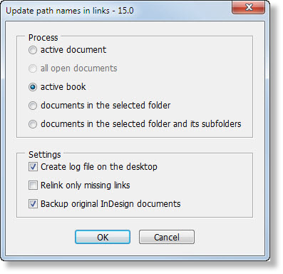
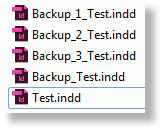
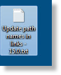
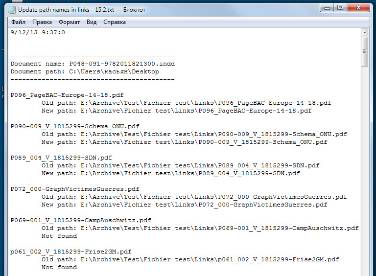

Update path names in links
Script for InDesign CS3–CC version 15.3
This script relinks old links with new ones in a folder you choose, including subfolders.
At first, it looks for the new link that has the same name as the old one, in the selected folder, and if it´s found, relinks it. If the link with the exact name is not found and the link is not a text file (e.g. InCopy, Word, RTF, Excel file), the script tries to find a file with the same base name but a different extension (“.psd”, “.tif”, “.jpg”, “.ai”, “.eps”, “.pdf”, “.indd”). If the script doesn´t find the new link in the chosen folder, it repeats the above-mentioned process for every subfolder.

This version allows you to batch process several documents: in the active book, all open documents or all the documents in the selected folder.
When “active document” or “documents in the selected folder” option is selected, the script opens each document, one by one, without giving any warnings (about missing fonts, links, etc.), updates the links, saves and closes them. If “Backup original InDesign documents” check box is on, the script will make copies of original documents by adding “Backup_” prefix to the initial name. The script never overwrites the files whose name starts with “Backup_”. If the backup file already exist, it creates a new one by adding a consecutive number like so:

With “Create log file on the desktop” check box on, it creates a log file on the desktop where you can see all the document that were processed; links, their old and new paths, etc.

Log file open in Notebook

I will be glad to receive any feedback on the script: bug reports, suggestions, ideas.
Click here to download the script.
Here is the old version 14.1 for CS2–6.